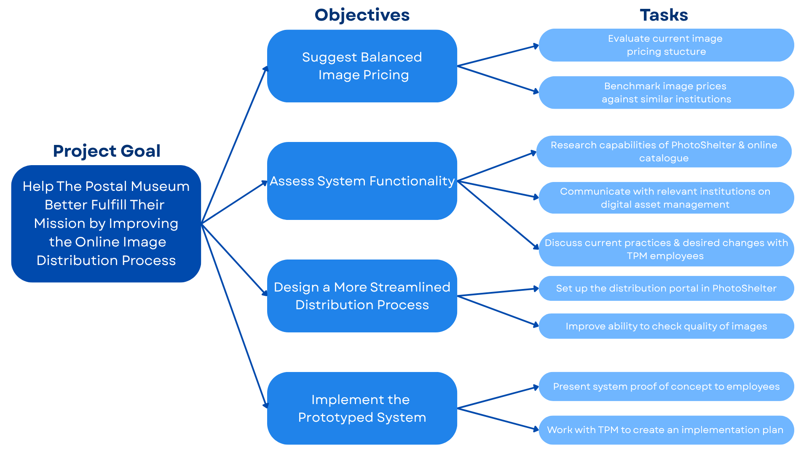
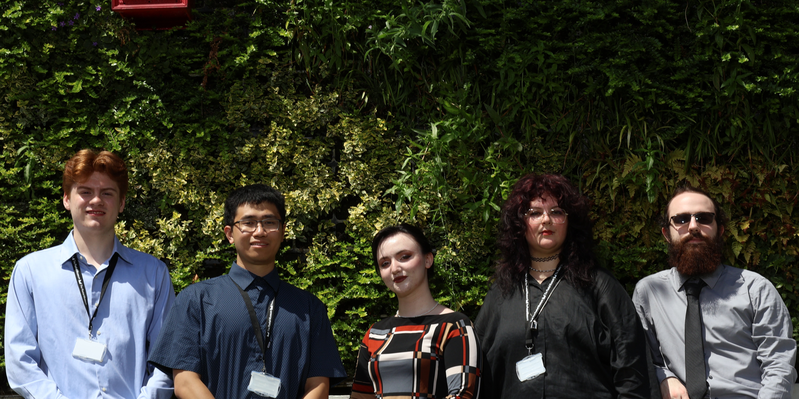

Interactive Qualifying Project (IQP) is WPI's signature project-based curriculum.
Students work in teams to solve real scientific, engineering, and societal problems.
For my IQP, my team traveled to London to improve the commerical image distribution system
for our sponsor The Postal Museum.

Project Experience
From this project, we performed many actions necessary for a team project.
The team interviewed the museum staff to accurately know the needs and demands of the sponsor.
We held regular team and sponsor meetings to report the progress of the project.
Along the way, we specialized into our roles and I did my best to be flexible and adapt to unexpected problems.
In the end, the project was a success and it was a valuable first real-world experience.
Review the IQP Paper from WPI Website
Download the IQP Paper

Technical Experience
I was the technical lead and the major technical achievement was the Image Quality Examinator (IQE).
IQE was a python program developed to assist with quality assessment of images in the museum library.
Through this experience, I learned how to use API, fetch desired data, and upload changes to real commercial servers.